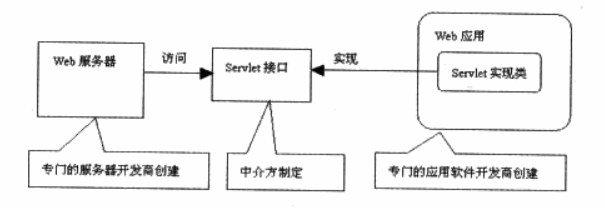
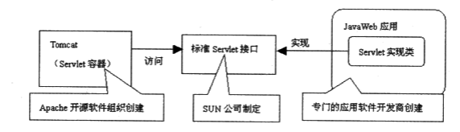

Web运作原理
当用户在浏览器中输入一个指向特定网页的URL地址时，浏览器就会生成一个HTTP请求，建立与远程HTTP服务器的TCP连接，然后把HTTP请求发送给远程HTTP服务器，HTTP服务器再返回包含相应网页数据的HTTP响应，最后浏览器把这个网页显示出来。当浏览器与服务器之间的数据交换完毕，就会断开连接。如果用户希望访问新的网页，浏览器必须再次建立与服务器的连接。
为了能让Web服务器与Web应用这两个不同的软件系统协作，首先应该由一个中介方制定Web应用与Web服务器进行协作的标准接口，Servlet就是其中最主要的一个接口。中介方规定：
- Web服务器可以访问任意一个Web应用中实现Servlet接口的类。
- Web应用中用于被Web服务器动态调用的程序代码位于Servlet接口的实现类中。

Servlet规范把能够发布和运行JavaWeb应用的Web服务器称为Servlet容器，它的最主要的特征是动态执行JavaWeb应用中的Servlet实现类中的程序代码。

Servlet的特点：
- 提供了可被服务器动态加载并执行的程序代码，为来自客户端的请求提供相应服务。
- Servlet完全用Java语言编写，因此要求运行Servlet的服务器必须支持Java语言。
- Servlet完全在服务器端运行，因此它的运行不依赖浏览器。不管浏览器是否支持Java语言，都能请求访问服务器端的Servlet。
Servlet规范规定，Servlet容器响应客户端请求访问特定Servlet的流程如下：
- 客户端发出要求访问特定Servlet的请求。
- Servlet容器接收到客户请求，对其解析。
- Servlet容器创建一个ServletRequest对象，在ServletRequest对象中包含了客户请求信息以及其他关于客户的信息，如请求头、请求正文，以及客户机的IP地址等。
- Servlet容器创建一个ServletResponse对象。
- Servlet容器调用客户端 所请求的Servlet的service()服务方法，并把ServletRequest对象和ServletResponse对象作为参数传给该服务方法。
- Servlet从ServletRequest对象中可获取客户的请求信息。
- Servletl利用ServletResponse对象生成响应结果。
- Servlet容器把Servlet生成的响应结果发给客户。
-------------本文结束感谢您的阅读-------------